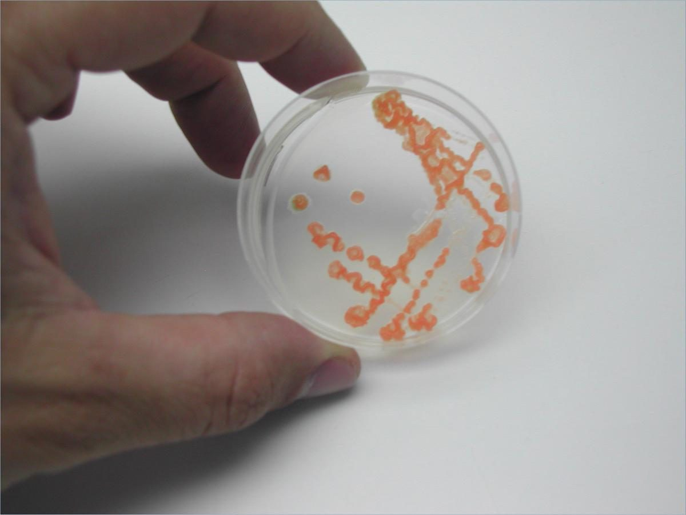

01 · MECHANISMS
Microbial interactions & carbon flow
How do trace metals alter methane oxidation and the exchange of methane-derived carbon? We use cultures, model communities and genomic approaches to investigate the partnerships behind ecosystem function.
